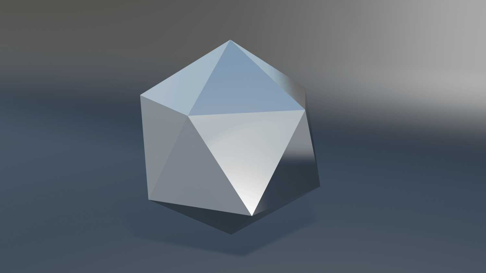
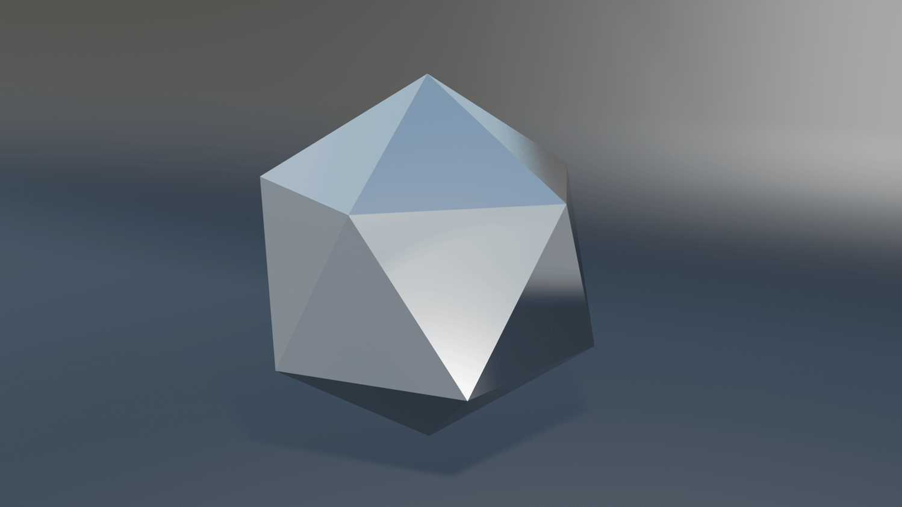
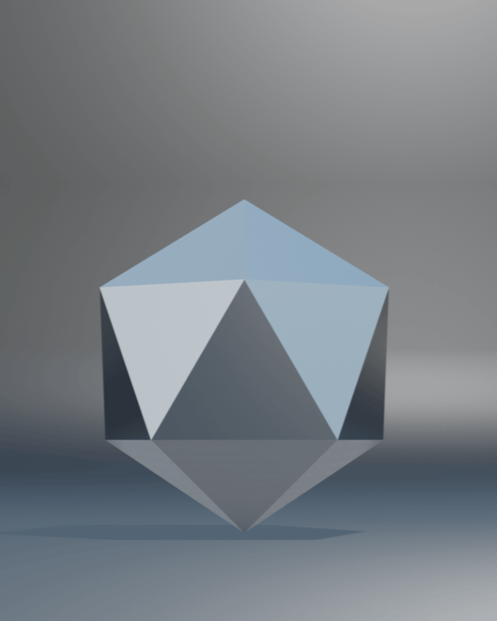
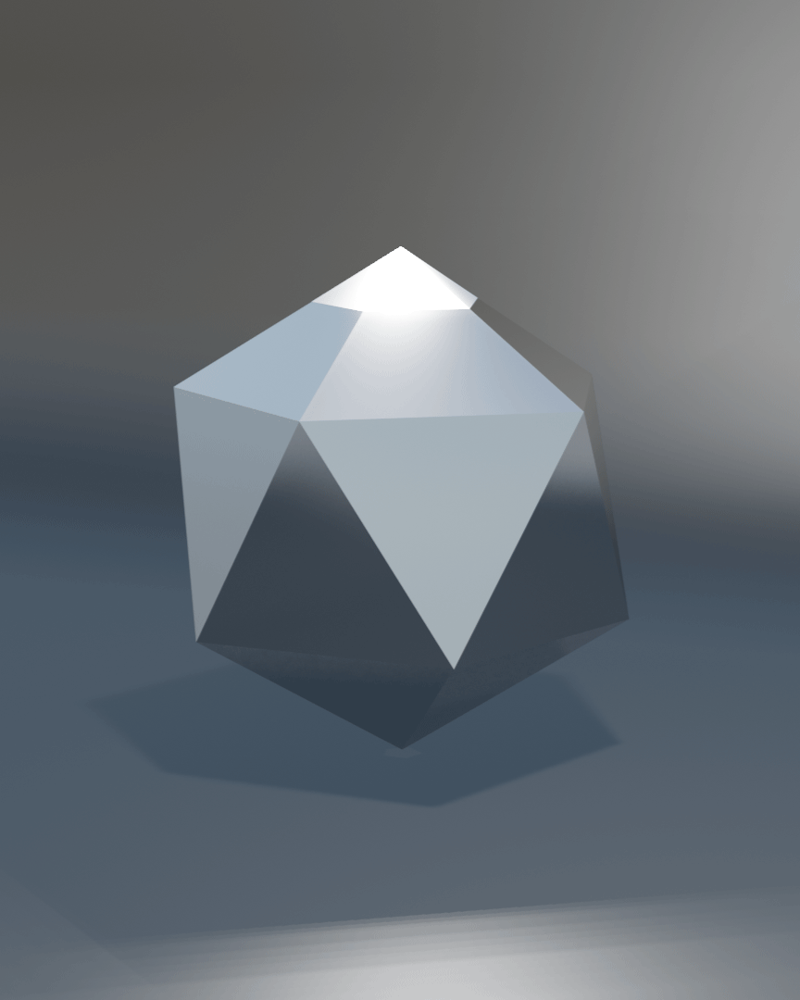

OYSTER PREMIUM PLATON IV IN EDELSTAHL OYSTERSTEEL. 20 KONGRUENTE GLEICHSEITIGE DREIECKE MIT GLEICH LANGEN KANTEN ZUSAMMENTREFFEND IN 12 ECKPUNKTEN.
Er wurde dank seiner Form, des äußerst widerstandsfähigen Edelstahl Oystersteel und seines Designs zu einem Ikosaeder für den großen Auftritt.

20 KONGRUENTE GLEICHSEITIGE DREIECKE
FORMSCHÖN UND STILSICHER IN JEDER ERDENKLICHEN SITUATION
Die 20 kongruenten Flächen sorgen für Flexibilität bei der Positionierung und einen sicheren Stand. Die Kanten und die Eckpunkte in denen sie aufeinandertreffen sind leicht abgerundet.
Besondere Merkmale
ABGERUNDETE KANTEN
Handliche Formgestaltung

EDLES OYSTERSTEEL
Äußerst korrosionsbeständig

PRÄGUNG
Ein luxuriöser Akzent

NACHTMODUS
Leistung & Funktion
MODERNES DESIGN
Formschön & zeitlos

INDIVIDUELL EINSETZBAR
Flexibel in der Verwendung
Galerie
 



VARIANTEN
OYSTERSTEEL - SKYBLUE

OYSTERSTEEL - GOLD

OYSTERSTEEL - ROSÉGOLD
KONTAKTIEREN SIE
EINEN OFFIZIELLEN IKOX FACHHÄNDLER
Die Ikox Kollektion umfasst eine Vielzahl an Modellen mit unterschiedlichen Materialien, Formen und Größen passend zu jedem Stil.
MEHR ZU PLATON
TECHNISCHE DETAILS
| GRÖSSE | MATERIAL | MODI |
|  |

|
 |
|
FLÄCHEN |
OYSTERSTEEL |
TAG |
|
KANTEN |
PRÄGUNG |
NACHT |
|
KANTENLÄNGE |
GEWICHT |
|
|
ECKPUNKTE |
||
|
VOLUMEN |
WIE MAN DAS MODELL
PLATON IV BEDIENT
Ikox Ikosaeder stehen für Exzellenz und Formschönheit. Sie sind für den täglichen Gebrauch konzipiert und eignen sich je nach Modell für zahlreiche Anwendungen. Geschaffen, um die Zeit zu überdauern, bestehen diese platonischen Körper durch ihre prägnante und zeitlose Form. Der Platon IV ist der ideale Ikosaeder für einen großen Auftritt. Erfahren Sie in diesem Video mehr über seine Funktionen und wie man den Tag- und Nachtmodus aktiviert.